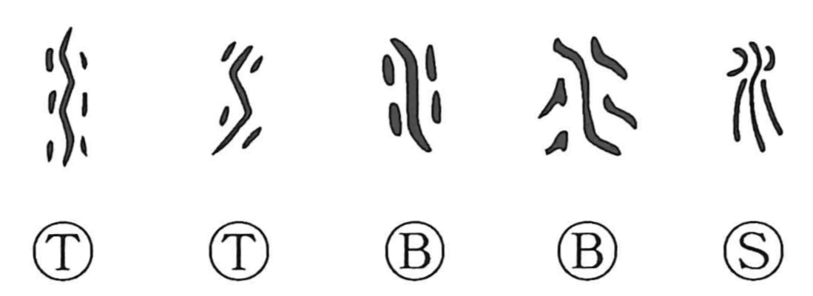

水

Kun: mizu | On: sui
water
Explanation
水 pictures flowing water, with a central current and smaller strokes running beside it. The early lines follow the movement of the stream. 川 shows three substantial currents, while 水 represents a smaller flow.
From that stream come water, rivers and seas, and the acts of moistening or soaking into something. As a component it often becomes 氵, the three-dot water form in words for liquids and their behaviour.
Adding marks for frozen pieces gives the related 冰 or 氷, where the current has become ice. Water can also establish a level, providing a practical measure of evenness. The flowing substance, its changed condition, and its use in measuring connect through this simple original picture.